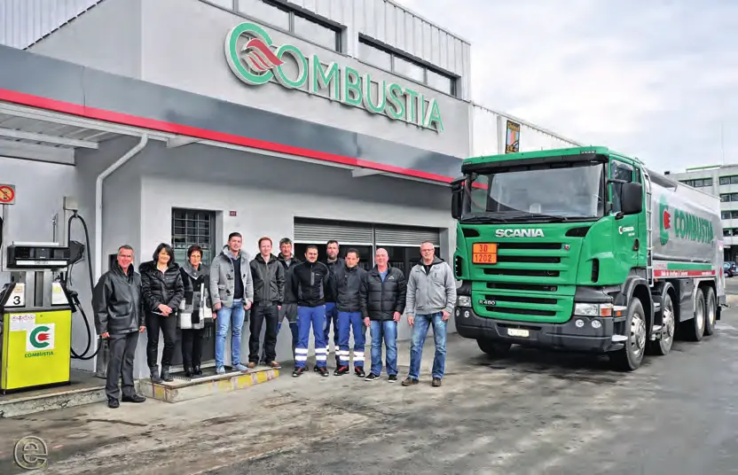
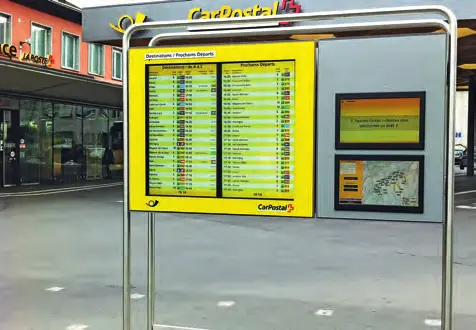
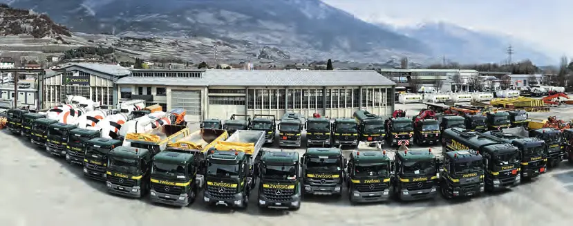
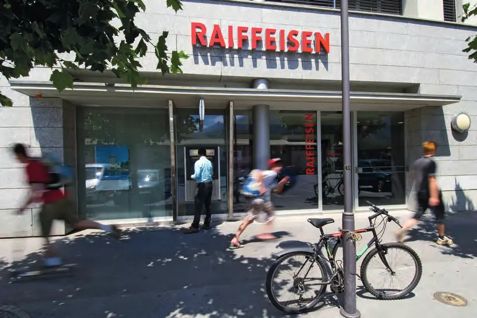
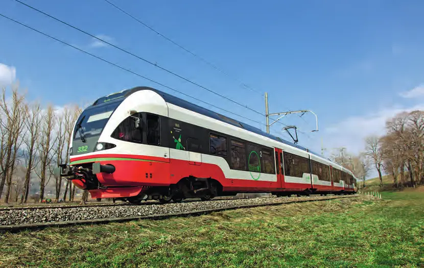

Collectivités · 2014 · Valais (Sion, Martigny, Sierre) et Neuchâtel
Swiss Knowhow – Union des villes suisses : Valais et Neuchâtel (2014)
Numéro réalisé en partenariat avec l'Union des villes suisses et consacré aux villes de Sion, Martigny, Sierre et Neuchâtel. Après un entretien en allemand avec Kurt Fluri, président de l'Union, les présidents de ville et conseillers municipaux présentent économie, urbanisme, mobilité, école, culture, sport et énergie. Des portraits d'entreprises valaisannes et neuchâteloises (construction, informatique, énergie, transports, microtechnique, banque, laboratoire médical) complètent l'édition, qui se termine par un index des profils d'entreprises.
Sommaire · 44 articles
 Interview
InterviewStadt Solothurn – Interview mit Nationalrat Kurt Fluri
Le président de l'Union des villes suisses

Sion, une petite capitale devenue un vrai centre urbain
Un développement ambitieux et harmonieux – Marcel Maurer, président de la Ville de Sion

Sion, une ville attractive pour l'économie et le tourisme
Interview de Benoît Fournier, vice-président de Sion et président de Sion Tourisme

Renforcer la mobilité douce et les transports publics
Interview de Georges Joliat, chef du service des travaux publics de la Ville de Sion
Le sport pour tous !
Interview de Blaise Crittin, chef du service des sports de la Ville de Sion
Un aéroport accessible, proche des grandes stations
Interview de Cyrille Fauchère, président de la commission de l'aéroport international de Sion

Du dynamisme de la vie culturelle sédunoise
Interview de Gaëlle Métrailler, déléguée culturelle de la Ville de Sion

Cultiver le vivre ensemble et le respect
Interview de Vincent Pellissier, conseiller municipal de Sion en charge de l'instruction publique
 Publireportage
PublireportageBativa SA – Nous réalisons pour vous !
Génie civil, bâtiment et aménagements à Sion
 Publireportage
PublireportageCIGES SA – Le spécialiste de l'informatique centralisée
Centre informatique de gestion à Sion

PublireportageCombustia SA – Votre fournisseur valaisan en carburant et huile de chauffage
Mazout, carburants et 30 stations-service
CSS Assurance – Un partenaire qui en vaut la peine à plus d'un titre
Gestion de la santé en entreprise avec vivit
 Publireportage
PublireportageEditech SA – Votre partenaire pour les structures et le génie civil
Bureau d'ingénieurs à Ayent et Sion
 Publireportage
PublireportageGDclimat SA – 30 ans d'expérience à votre service
Chauffage, ventilation, climatisation – partenaire de Minergie
 Publireportage
PublireportageValcoris Gestion – Votre partenaire pour un avenir sûr
Gestion de fortune, fiduciaire et accompagnement des seniors (version anglaise incluse)

Publireportageswisspro – Des solutions globales de qualité
Installations électriques, ICT et BCT en Suisse romande
 Interview
InterviewMartigny, un état d'esprit
Marc-Henri Favre, dynamique président de la Ville
DossierMartigny, un modèle d'intégration scolaire
« Apprendre tous ensemble en respectant chacun » – Anne-Laure Couchepin Vouilloz
DossierLa sécurité civile exige une organisation sans faille
Martigny assume son rôle de chef-lieu – Serge Fellay
DossierLa Fondation Gianadda, temple des arts plastiques
Martigny au carrefour des arts et du tourisme – Michaël Hugon
DossierMartigny à l'horizon 2030
Un développement assumé et maîtrisé – Florence Kuonen
DossierLa Place Centrale de Martigny – À la hauteur de son histoire
David Martinetti, conseiller municipal en charge des Travaux & Bâtiments publics
 Publireportage
PublireportageSinergy, partenaire de proximité
Électricité, eau, chauffage, TV numérique, Internet et téléphone – Patrick Pralong, directeur
DossierMartigny, énergétiquement exemplaire
Une politique cohérente à long terme – René Quiros
 Publireportage
PublireportageMont-Blanc Express : la voie royale pour le Mont-Blanc
TMR, le transporteur régional incontournable
Sierre relève les défis du 21e siècle
Le plus important campus étudiant du Valais – François Genoud, président de la Ville
Favoriser les transports publics et la mobilité douce
Interview de Pierre Kenzelmann, conseiller municipal de Sierre en charge des travaux publics
Des conditions-cadres favorables pour les entreprises
Interview de Pierre Berthod, conseiller municipal de Sierre en charge de l'économie publique
Développer des collaborations à l'échelle régionale
Interview de Laetitia Massy, conseillère municipale de Sierre en charge de l'enseignement et des actions sociales

Le pragmatisme au service de l'environnement
Interview de Mario Rossi, conseiller municipal de Sierre en charge de l'environnement, de l'eau et de l'énergie

Un centre-ville fort et des quartiers dynamiques
Interview de Jean-Paul Salamin, conseiller municipal de Sierre en charge de l'aménagement du territoire

PublireportageV+A Zwissig SA – Entreprise de transports orientée clients
Une entreprise familiale sierroise depuis 1912

PublireportageBanque Raiffeisen – Une coopérative de proximité
Banque Raiffeisen de Sierre et Région
 Publireportage
PublireportageLaboratoire d'analyses médicales Dr Luc Salamin – Répondre aux besoins du canton du Valais
Un laboratoire privé et indépendant à Sierre et Sion
 Interview
Interview« Neuchâtel, art de vivre et innovation »
Olivier Arni, président de la Ville, décline la nouvelle devise en axes stratégiques
 Interview
InterviewUrbanisme, Économie, Environnement – Des logements et des projets d'urbanisme
Olivier Arni, directeur de l'Urbanisme, de l'Économie et de l'Environnement
 Interview
InterviewÉducation, Santé et Mobilité – Christine Gaillard, une volonté politique affirmée
La conseillère communale de Neuchâtel
Politique d'agglomération – « Nous savons où nous allons et ce que nous voulons »
Pascal Sandoz, conseiller communal de Neuchâtel
Culture, Sports et Tourisme – Un espace de congrès en perspective
Thomas Facchinetti, conseiller communal de Neuchâtel
 Publireportage
PublireportageAdax SA – Le leader du décolletage de haute précision
De la montre à l'espace
 Publireportage
PublireportageHybrid SA – La microélectronique à votre service !
Assemblage de circuits électroniques miniaturisés

PublireportageTransports Publics Neuchâtelois SA – transN : notre force, votre réseau
Le transporteur public du canton de Neuchâtel
 Publireportage
PublireportageEndetec – Neroxis : de la source à l'utilisateur, deux outils pour garantir une eau de haute qualité
Monitoring des réseaux d'eau potable
Groupe E dans le canton de Neuchâtel – Engagement durable et présence renforcée
Entretien avec Dominique Gachoud, directeur général
Entreprises de ce numéro · 30
Adax SA
Décolletage de haute précision
Banque Raiffeisen de Sierre et Région
Banque coopérative
Bativa SA
Génie civil, bâtiment, terrassement et transport
CIGES SA (Centre Informatique de Gestion)
Informatique centralisée pour collectivités
Combustia SA
Distribution de combustibles et carburants
CREM (Centre de recherches énergétiques et municipales)
Recherche appliquée en énergie urbaine
CSS Assurance (agence de Sion)
Assurance maladie et accidents
Editech SA
Bureau d'ingénieurs civils
Endetec – Neroxis SA
Monitoring de la qualité de l'eau

Fondation Pierre Gianadda
Musée et centre d'expositions
GDclimat SA
Chauffage, ventilation, climatisation et tuyauterie industrielle

Groupe E
Entreprise générale de l’énergie
Hybrid SA
Assemblage microélectronique
IDIAP (institut de recherche)
Recherche en gestion de l'information multimédia
Laboratoire d'analyses médicales Dr Luc Salamin S.A.
Laboratoire d'analyses médicales
Revaz SA
Sinergy Commerce SA / Sinergy Infrastructure SA
Électricité, eau, chauffage à distance et multimédia

Stadt Solothurn – Stadtpräsidium
Administration communale
swisspro SR SA
Installations électriques, ICT et BCT
TMR SA (Transports Martigny et Régions)
Transports publics ferroviaires et routiers

TransN Transports Publics Neuchâtelois SA
Transports publics (bus, trains, funiculaires)
V+A Zwissig SA
Transports, terrassement et services
Valcoris Gestion de fortune et de patrimoine
Gestion de fortune, fiduciaire et accompagnement des seniors

Valrésidence Sàrl
Ville de Martigny
Administration communale
Ville de Neuchâtel – Conseil communal
Administration communale
Ville de Neuchâtel – Culture, Sports, Tourisme
Administration communale (culture, sports, tourisme)
Ville de Neuchâtel – Direction de l'Urbanisme, de l'Économie et de l'Environnement
Urbanisme et développement économique
Ville de Sierre
Administration communale
Ville de Sion
Administration communale
Aucun résultat.